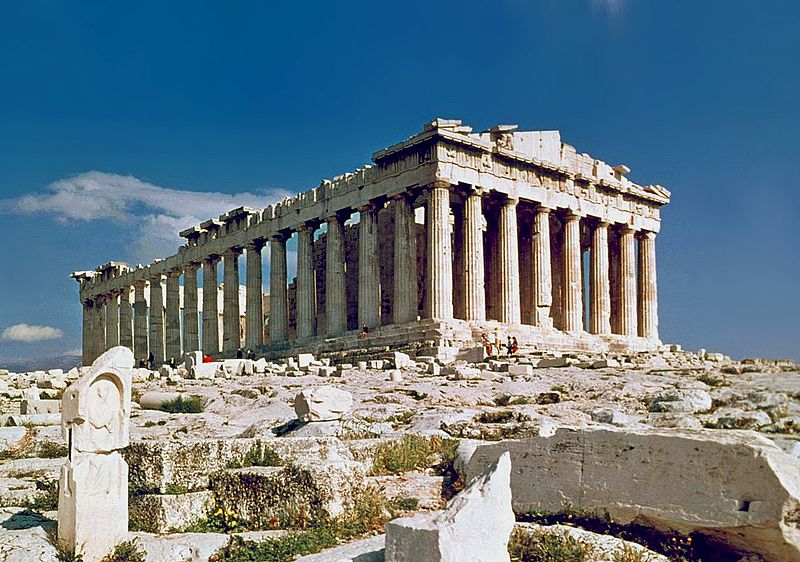

In many ancient civilizations such as those of Egypt and Mesopotamia, architecture and urbanism reflected the constant
engagement with the divine and the supernatural, and many ancient cultures resorted to monumentality in architecture to
represent symbolically the political power of the ruler, the ruling elite, or the state itself.
The architecture and urbanism of the Classical civilizations such as the Greek and the Roman evolved from civic ideals
rather than religious or empirical ones and new building types emerged. Architectural "style" developed in the form of
the Classical orders. Roman architecture was influenced by Greek architecture as they incorporated many Greek elements
into their building practices.
Texts on architecture have been written since ancient time. These texts provided both general advice and specific formal
prescriptions or canons. Some examples of canons are found in the writings of the 1st-century BCE Roman Architect
Vitruvius. Some of the most important early examples of canonic architecture are religious.
